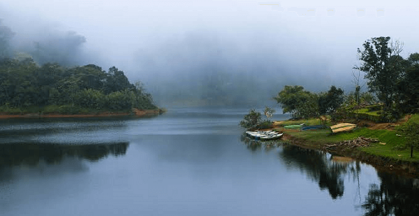
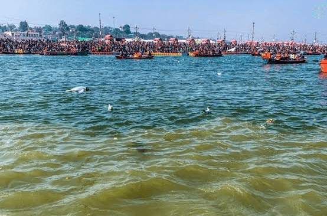
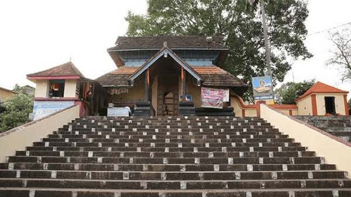

Pathanamthitta
A hilly province of pristine splendour, the district of Pathanamthitta is hailed as the headquarters of pilgrim worship in Kerala. Three rivers course through its prosperous terrains comprising natural divisions of the lowlands, the midlands and the highlands. Interspersed with temples, rivers, mountain ranges and coconut groves, more than fifty per cent of the total area of this region is covered by forests. Pathanamthitta has been dubbed a Heritage Village as it attracts visitors from all over the world for its spectacular water fiestas, religious shrines and cultural training centres. Pathanamthitta is also home to the unique AranmulaKannadi - metal mirrors that are meticulously handcrafted and the VasthuVidyaGurukulam, a village which practices the ancient Indian school of architecture.

Places to visit
Gavi

The village of Gavi is located in Kerala, India's Pathanamthitta district. It is a little community hidden between tea gardens and broad, lush forests, making it one of India's most stunning locations. The location is a model eco-tourism site that showcases the world's astounding abundance of flora and wildlife. It is a unique endekilometersavour in and of itself. Near Thekkady, Gavi is located 14 kilometers southwest of Vandiperiyar and 28 kilometers from Kumily. In many ways, Gavi, which is located within the Ranni reserve forest, is heaven on Earth
Thriveni Sanganam

This beach is located 7 km from Thiruvananthapuram Central Railway station and a short drive from International Airport. It is one of the best tourist places in Trivandrum. People come here in the evening to view the sunset, Giant Mermaid statue, some vantage points specifically created for picnickers.
Kaviyoor Mahadeva Temple

On a small hilltop in Kaviyoor, Pathanamthitta District stands the historic Kaviyoor Mahadeva Temple. One of Kerala's most well-known and important Shiva temples, this temple is dedicated to Lord Shiva and Goddess Parvati. The temple is also known as Thrikkaviyoor Mahadeva Temple and was constructed in a distinctive architectural style. The state of Kerala is known for its stringent rites and customs, which are a vital component of all temples, including this historic temple. Outside of the outside walls, non-Hindu is not permitted within the temple. Photography is categorically prohibited, and there is a strict dress code. Here, Hanuman Jayanti is commemorated along with an annual event that is held in December or January. The Hanuman Temple is another name for the temple. Bhagavathy Temple, Sabarimala Sri Dharmasastha Temple, Kadamanitta Devi Temple, Valiyakoikal Temple, Aranmula Parthasarathy Temple, and Sree Vallabha Temple are some of the significant temples nearby.